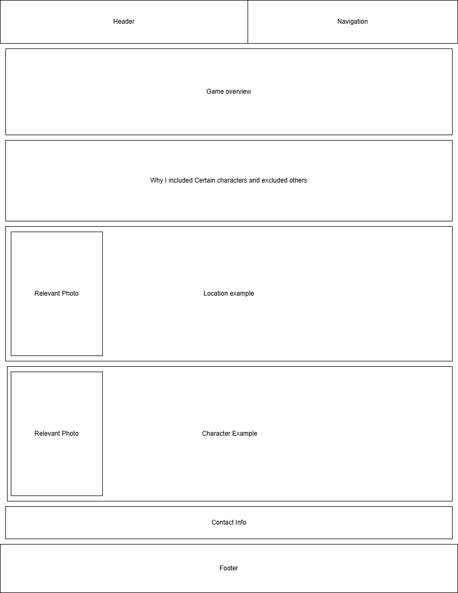
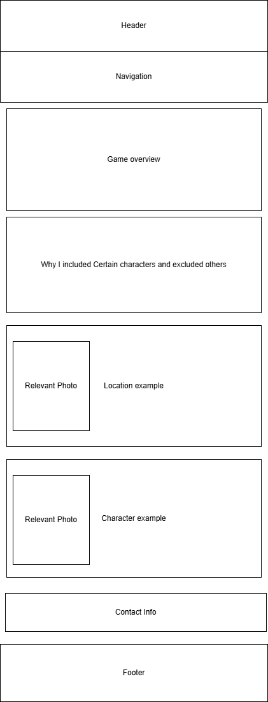

Site Name
Five Nights at Freddy's Mega Encyclopedia
This name was used because it helps show the user what is going to be shown. Mega has been added because it implys that every important character is going to be shown.
Site Purpose
The site purpose is to show every relevent characters to the lore of FNAF, and how each character works.
Scenarios
This site plans to help answer questions such as....
What characters are important to FNAF?
How does this character work?
Where does this character show up?
And it will do so through showing each character, each location, and the information relevant to them.
Color Scheme
I will be using a dark theme because it more closely correlates to the games themes, but more specifically I will be basing the colors on the FNAF Security Breach main animatronics and their primary colors.
The background will be a lighter black gradienting to a dark purple because I didn't like it being a solid color.
Each section will have a red border and box shadow to emulate a neon glow effect that is present in that game, themed off of Glamrock Freddy, and a solid background color for ease of reading.
Each header will be neon green themed off of Montgomery Gator
All text within the sections will be neon pink, themed off of Glamrock Chica
And I plan to border each image with a neon purple, based on Roxanne Wolf
Typography
I will be using google's cause font because I like it's style
Wireframe

